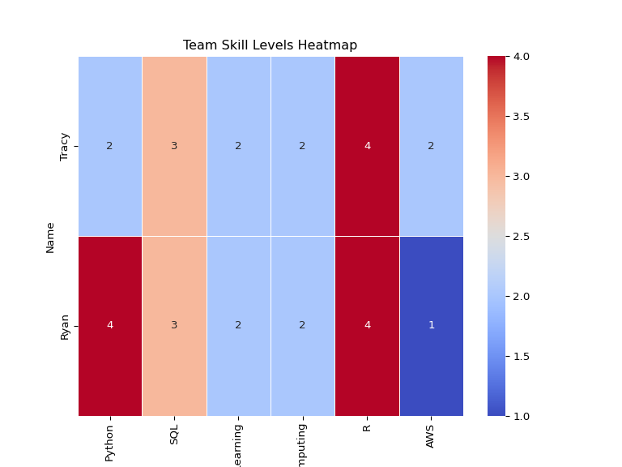
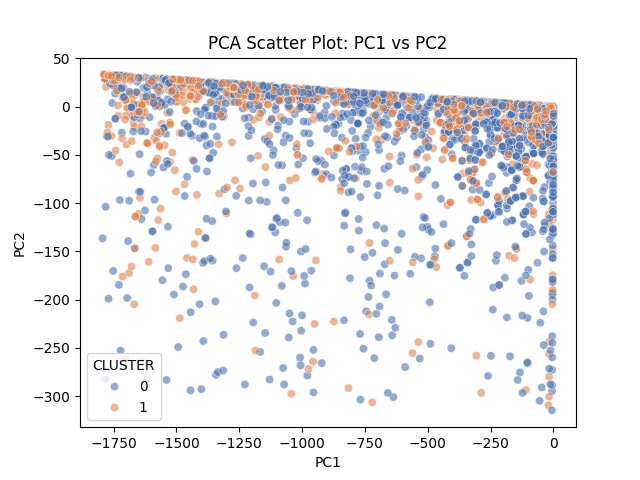
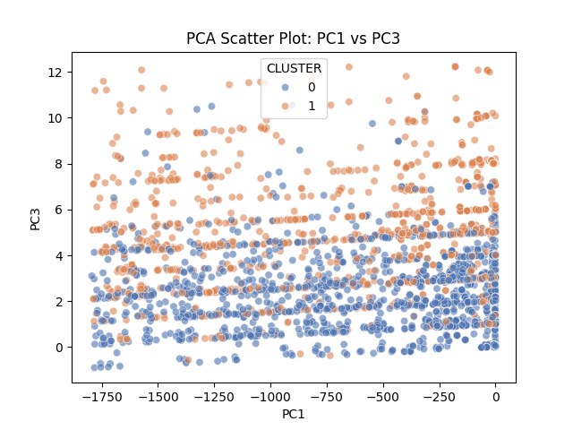
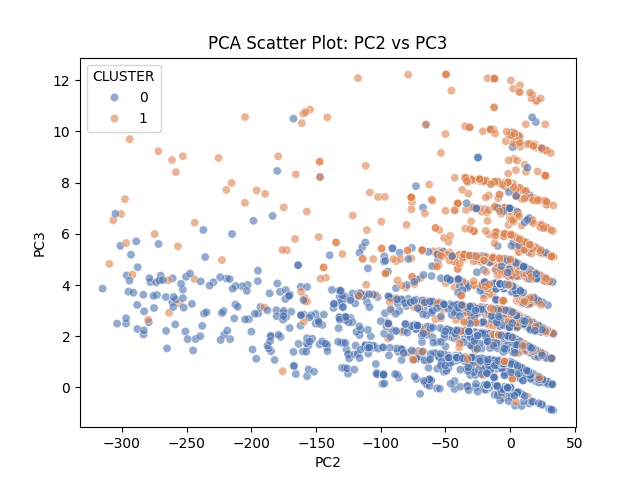
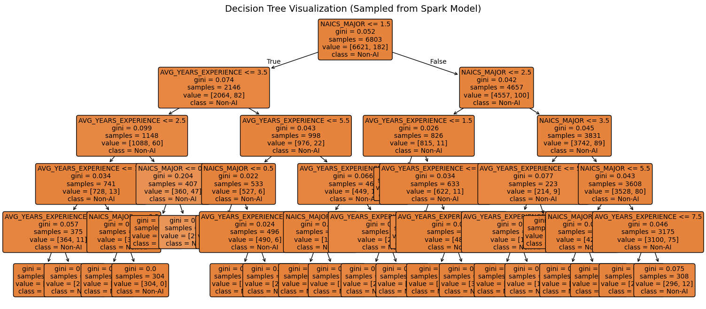

| Python | SQL | Machine Learning | Cloud Computing | R | AWS | |
|---|---|---|---|---|---|---|
| Name | ||||||
| Tracy | 2 | 3 | 2 | 2 | 4 | 2 |
| Ryan | 4 | 3 | 2 | 2 | 4 | 1 |
Evaluating Personal Job Market Prospects in 2024
Final Report
Introduction
Artificial Intelligence (AI) is rapidly transforming the global labor market, reshaping how work is performed across a wide range of industries. As AI technologies automate specific tasks and enhance human capabilities, questions emerge around how they create new opportunities and disrupt career paths. To answer this increasingly prevalent question, understanding the evolving landscape of AI versus non-AI careers is essential for employees and policymakers navigating this evolving landscape. Together, Ryan and Tracy’s research and analysis aim to explore how AI impacts job security, its presence in 2024, and its potential evolution in the future.
Research Rationale
The ongoing integration of artificial intelligence (AI) into the workplace presents complex implications for the future of employment. As AI continues to develop, it influences which jobs potentially exist in the future and how work will be structured. This makes it crucial to research the broader effects of AI beyond immediate automation concerns.
In 2024, the adoption of AI is still uneven, and its impact may not yet be fully visible in many datasets. By investigating and researching trends and early signs of influence, this study aims to provide a foundation that can guide strategies for future employment practices. Research of reputable information is key to unpacking how leading figures intend to explain and facilitate a smooth transition into an AI world.
Team Members’ Skill Proficiency Levels
A numerical scale (1-5) to indicate proficiency levels:
- 1 = Beginner
- 2 = Basic Knowledge
- 3 = Intermediate
- 4 = Advanced
- 5 = Expert
Team Skill Levels Heatmap

Job Market vs. Team Skill Coverage
| Python | SQL | Machine Learning | Cloud Computing | R | AWS | Docker | |
|---|---|---|---|---|---|---|---|
| Name | |||||||
| Tracy | 2 | 3 | 2 | 2 | 4 | 2 | 0 |
| Ryan | 4 | 3 | 2 | 2 | 4 | 1 | 0 |
Comparing Team Skills to Industry Requirements
Working in the IT department requires a diverse set of skills that Ryan and Tracy will need to to develop to meet industry standards. The top skills in this line of work include experience with python, SQL, Machine Learning, Cloud Computing, R, Docker, and AWS. While Ryan has solid experience with Python, SQL, and R, Tracy has only limited experience with Python. Both need to improve their proficiency in Machine Learning, Cloud Computing, and AWS while familiarizing themselves with Docker, where they currently have no experience.
Improvement Plan
Although there is room for improvement in Python, SQL, and R skills, Ryan should prioritize enhancing his efficiency in Machine Learning, Cloud Computing, AWS, and Docker to achieve a well-rounded skill set. The same can be said for Tracy, who can also work on improving her efficiency with Python. Both individuals have similar skill gaps, but Ryan’s experience with Python can be leveraged to help Tracy with future challenges. Ryan can review Tracy’s Python code, providing feedback to help her write cleaner and more efficient code. Given both Ryan’s and Tracy’s other skill sets, using recommended resources will be essential in further developing their abilities.
A valuable platform to improve and familiarize oneself with these topics is DataCamp, an online learning platform that helps aspiring data analysts and engineers learn data analytics through engaging activities. The platform offers several resources for learning data analysis, such as webinars, code-alongs, tutorials, blogs, and podcasts. DataCamp is also designed to accommodate individuals at different levels, offering courses for beginners, intermediate, and advanced learners. The website provides courses in Python, R, Cloud Computing, AWS, and Docker—topics that Ryan and Tracy are seeking to improve in.
Another resource to consider is Fullstack Academy, an online bootcamp for data analytics. The bootcamp helps individuals gain the skills needed to advance their career paths in coding, data analytics, AI, and Machine Learning, with the promise that students will develop their skills in 26 weeks. The data analytics bootcamp at Fullstack offers students a live online classroom environment that includes live instruction, exercises, and team projects. The curriculum covers data analytics with Excel, SQL, and Python, while also addressing the latest essentials of generative AI. This platform would provide Ryan and Tracy with essential building blocks to further their coding skills.
AI vs Traditional Jobs Research
Exploring the Nexus between Artificial Intelligence and Job Displacement: A Literature Review
Prakash Adhikari, faculty member of the Faculty of Humanities and Social Sciences, Department of Conflict, Peace, and Development Studies at Tribhuvan University in Kirtipur, Nepal, explains how artificial intelligence (AI) is changing jobs in two significant ways (Adhikari, 2024). It is creating new types of jobs while at the same time causing problems for existing ones. AI, which is deeply based on technologies such as machine learning and robotics, is suitable for automating tasks and helping people do more valuable work. Simply put, AI can make work more productive but also brings risks such as job loss, skill gaps, and inequality.
Further studies reveal that jobs involving repetitive tasks, such as those in factories, office work, and some customer service roles, are most likely to become automated in the future. At the same time, new jobs are emerging in areas like data analysis, software development, and healthcare using AI. Higher-skilled jobs often benefit from AI by becoming more efficient and better paid, while many low- and middle-skill jobs are at serious risk of disappearing (Adhikari, 2024).
Adhikari suggests plans to help people adapt to these changes. These plans include providing training and lifelong learning opportunities, improving social safety nets like unemployment benefits, creating fair and clear AI rules in employment sectors, and pushing for innovation in smaller businesses outside of major tech centers. While AI-driven innovations offer many benefits, Adhikari urges caution, calling for more detailed research to understand how AI affects workers and what policies work best in different industries to reduce job loss while promoting new innovations (Adhikari, 2024).
Modeling the Complex Interplay: Dynamics of Job Displacement and Evolution of Artificial Intelligence in a Socio-Economic Landscape
The research document, written and organized by three professors in the Department of Mathematics at Mizan-Tepi University, Tepi, Ethiopia, examines the impact of rapid advances in artificial intelligence (AI) on job security and the economy, considering the relationship between AI and employment as an interconnected, evolving, and complex phenomenon. They focus on how the adoption of AI is changing the labor markets over time and under what conditions jobs are lost, transformed, or balanced with the introduction of automation. The argument is that a viewpoint centered on technology is inadequate, and that a thorough approach, incorporating feedback loops and nonlinear effects, is necessary to understand the long-term implications better (Idrisi et al., 2024). Their goal is to build a foundation that mitigates the adverse impact of AI while promoting its enhanced productivity.
The study employs the Lotka-Volterra model, also known as the predator-prey model, to illustrate the interaction between human jobs and AI capabilities (Idrisi et al., 2024). Analyzing the model reveals different outcomes, including job growth, job loss, the coevolution of jobs and AI, or the decline of both. The results of the model show that a situation with no jobs or AI is unstable; stable coexistence is possible if AI growth is controlled and human job creation experiences healthy growth. The outcome primarily depends on the speed of AI adoption, its productivity effects, and job creation.
The solution involves slowing down AI adoption to prevent shocks, investing in worker up-skilling, and fostering the development of job-creating industries. The article also suggests expanding the model to include wages, education, regulations, and capital flows, while, more importantly, using real data to view and manage accurate predictions. They suggest that suitable policies will enable the smooth integration of AI into the workplace, thereby reducing the negative impact on jobs and the livelihoods of employees (Idrisi et al., 2024).
The Potential Impact of AI Innovations on U.S. Occupations
Amid the rapid rise of artificial intelligence (AI) across industries, this study presents a novel, data-driven approach to understanding how AI innovations influence U.S. occupations broadly and at the level of individual tasks. The authors develop an “AI Impact (AII)” measure using deep learning natural language processing to match 17,879 occupational task descriptions from O*NET with 24,758 AI-related patents filed between 2015 and 2022. By analyzing patent text and using advanced semantic models (Sentence-T5), the AII quantifies how closely each task aligns with emerging AI technologies. Unlike earlier, coarse-grained methods relying on manual labeling or broad skill categories, this approach captures subtler, task-specific dynamics of AI impact, offering a more accurate and scalable picture of automation potential across industries (Septiandri et al., 2024).
The study reveals that AI increasingly influences both routine and nonroutine tasks, challenging the belief that automation mainly threatens repetitive work. Occupations with high AI exposure like as software developers, cardiovascular technologists, and air traffic controllers are concentrated in structured, data-driven sectors like healthcare, IT, and manufacturing, where AI enhances diagnostics, predictive maintenance, and workflow optimization. Meanwhile, jobs in agriculture, construction, and hospitality remain less affected due to their reliance on manual and context-dependent skills (Septiandri et al., 2024). Overall, the study finds that AI’s labor impact is moderated by its role in augmenting rather than replacing human expertise and by ongoing workforce shortages in high-demand fields. Instead of widespread displacement, AI is reshaping work by redistributing effort, supporting complex decision-making, and amplifying productivity across industries.
Employees’ Perceptions of the Implementation of Robotics, Artificial Intelligence, and Automation (RAIA) on Job Satisfaction, Job Security, and Employability
As robotics and artificial intelligence reshape workplaces, this study examines how employees perceive these changes. Drawing on 21 interviews across consulting, accounting, and hospitality, it highlights both the efficiency gains of RAIA and the ongoing importance of human traits like empathy and creativity. The study found that while automation and AI enhance productivity and efficiency by removing repetitive tasks, human qualities like empathy, creativity, and judgment remain irreplaceable (Bhargava & Bolton, 2021). Employees acknowledged both opportunities and threats in this transition and recognized RAIA’s potential to improve job quality and satisfaction while also fueling fears about job loss, data privacy, and skill obsolescence.
This tension produces what the authors describe as a “job satisfaction dilemma,” where enthusiasm for innovation coexists with anxiety over job stability, privacy concerns, and the need for continuous skill development.Perceptions vary by role: knowledge-based employees see automation as a productivity partner, while those in routine positions feel more vulnerable. The research shows that successful RAIA adoption requires more than technology, as it also calls for transparent communication, ethical governance, and active workforce support (Bhargava & Bolton, 2021).
By positioning RAIA as a tool to complement rather than compete with human labor, organizations can foster trust, adaptability, and long-term employability. Ultimately, the study underscores that in an age of intelligent machines, human adaptability, emotional insight, and lifelong learning remain the foundation of meaningful work.
Redefining careers in the age of artificial intelligence
Artificial intelligence (AI) is transforming the job market by both displacing certain roles and creating new opportunities. Routine and manual tasks, such as telemarketing, retail work, and data entry, are increasingly automated, while jobs requiring empathy, creativity, and complex problem-solving, like teaching, healthcare, and design, remain resilient (Lee et al., 2024). This shift highlights the evolving collaboration between humans and machines.
New roles are emerging to support AI systems, including positions that train AI, interpret AI decisions for humans, and ensure responsible and ethical AI practices. Industries across finance, healthcare, education, and technology are creating specialized positions that complement human skills rather than replace them entirely (Lee et al., 2024). These roles emphasize the importance of technical expertise, interdisciplinary knowledge, and ethical awareness.
To succeed in an AI-driven workforce, individuals and businesses must focus on skill development, adaptability, and lifelong learning. Key skills include data literacy, familiarity with AI, emotional intelligence, creativity, and problem-solving. Businesses can support this transition by integrating AI responsibly, fostering innovation, and providing opportunities for upskilling, ensuring that human capabilities continue to thrive alongside technological advancements (Lee et al., 2024).
Data Cleaning
Dropping Unnecessary Columns
The Unnecessary Columns:
- ID
- URL
- ACTIVE_URLS
- DUPLICATES
- LAST_UPDATED_TIMESTAMP
- NAICS2
- NAICS3
- NAICS4
- NAICS5
- NAICS6
- SOC_2
- SOC_3
- SOC_5
With the removal of older NAICS and SOC codes, our dataset now retains only the most current classification columns: NAICS_2022_6 for industry and SOC_2021_4 for occupation. This streamlines our analysis by focusing on up-to-date standards, reducing redundancy, and ensuring consistency in categorizing job postings.
Job Postings by Industry
The number of jobs an industry posts is indicative of its growth, the need for new talent, and an increase in goals. Such values help improve the industry’s attractiveness to students, career changers, and other industries looking to collaborate.
The bar chart illustrates the distribution of job postings by industry, with the majority of postings concentrated in a select few industries. An Unclassified Industry has the highest amount of postings, amassing over 9,000. This lead is followed by other sectors, such as Custom Computer Programming Services, Administrative Management and General Management Consulting Services, Employment Placement Agencies, and Computer Systems Design Services, in descending order by value and number of job postings, ranging from 4,000 to 5,000.
The remaining industries comprise a significantly smaller number of postings, indicating their low representation. This lower hiring demand could be a result of a lack of interest in the field from college graduates and skilled professionals, or the lack of proper outreach about such industries to the general public. Either way, the industries that deal with computer-based technology have higher volumes of job postings to meet the demand of companies and other businesses within their sector.
Salary Distribution by Industry
As salary is a strong determining factor in people’s choice of career and deciding between industries, it is essential to evaluate how 20 industries, as published by NAICS, compensate their talent across the board. Some industries, such as Software Publishers, Administrative Management and General Management Consulting Services, and Web Search Portals and All Other Information Services, display wide salary spreads, indicated by tall boxes in the plot. These industries also have significantly high-salary outliers, with salaries reaching almost $500k.
The median and interquartile ranges also differ between industries. For example, the Temporary Help Services and Direct Health and Medical Insurance Carriers industries have a tighter cluster of salaries, indicating more consistent pay ranges across various subsectors and titles, as well as other levels of seniority, unlike the other widespread industries, where salary expectations might differ drastically from company to company or region to region.
Overall, this distribution highlights how industry choice can also impact earning potential in the long run, potentially capping salaries despite years of experience, skill set, or educational level.
Remote vs. On-Site Jobs
Following 2020, there has been a significant increase in the need for work-life balance. This priority was heavily influenced by remote work, which helped maintain industries during the COVID-19 lockdown mandates. However, as society moves past the time of quarantine, it is becoming a prevalent question whether this multitude of remote jobs, which offer flexibility, will be carried forward into the future.
The pie chart illustrates how the lack of proper documentation can impact analysis, as 78.3% of jobs are not classified as remote, hybrid remote, or non-remote. Although this took up the larger portion of the diagram, 17% of those jobs are Remote, with another 3.11% being Hybrid remote (some days in-office and others virtually), which accounts for a fifth of all job postings. This demonstrates that flexible work arrangements are an essential factor for both the industry, in terms of their expectations for performance, as well as applicants and their need for a healthy balance between work and personal life.
Additionally, less than 2% of jobs are not Remote or are completely on-site, which further corroborates the idea that employers prefer and advertise flexibility over strict in-person requirements.
Using ML Methods to Analyze Data
Unsupervised Clustering
As a group, Ryan and Tracy will be implementing an unsupervised clustering model using the K-mean algorithm. They are seeking to differentiate AI-related jobs postings from non-AI ones. AI-related job postings will be defined by AI-related keywords. The results will serve to tell them how how certain features separate AI-related job postings from non-AI.
Features and Silhouette Score
They will be using the following features for our clustering model:
- Average Salary, expected to capture pay differences
- Job Title (Encoded), expected to capture role differences
- NAICS Code (Encoded), expected to separate jobs by sectors
- Average Years of Experience, expected to capture experience level differences
Grouping these features in a cluster of 2, they found a silhouette score of approximately 0.695, indicating a good clustering structure. However, since the score is not closer to 1 than expected, reflecting the complexity between AI and non-AI job postings.
| IS_AI_ROLE | CLUSTER | count |
|---|---|---|
| 1 | 0 | 47 |
| 1 | 1 | 19 |
| 0 | 0 | 2195 |
| 0 | 1 | 1669 |
The table shows the count of jobs by AI role and cluster. There are 66 AI - Labeled jobs total. Non - AI jobs are more numerous, with 3,864 present in the data set.
Pairwise Plots
Below are a series of pairwise plots showing the relationships between the features used in the clustering model, consisting of Average Salary, Job Title (Encoded), NAICS Code (Encoded), and Average Years of Experience. The plots seek to visualize how these features interact and potentially separate AI-related job postings from non-AI ones. From the plots, a clear relationship is not visible between the features due to the lower number of AI-related job postings in the dataset.
It would be unusual to see any AI jobs since AI jobs are not common in the hiring process. The few present in the visualizations are likely the ones that require higher technical skills in the ML domain. To further study our prompt, other processes will need to be performed.
PCA 2D Visualization Excluding Salary
Generating a 2D PCA plot excluding salary to visualize the clustering of AI-related and non-AI jobs based served as a useful alternative to the previous pairwise plots. The following PCA plots consist of PC1 vs PC2, PC1 vs PC3, and PC2 vs PC3.
The PC1 vs PC2 plots shows some separation between clusters along PC1, but a lot of overlap along PC2. The PC1 vs PC3 plot demonstrates a clearer separation between the clusters, with cluster groups more distinctly divided along PC3. The PC2 vs PC3 presents moderate cluster separation, with the appearance of vertical banding along PC2.
The results of the PCA plots indicate the there are now two visually distinct clusters, which is an improvement from the previous pairwise plots. However, there is still confusion regarding which features strongly divide AI-related job postings from non-AI ones.



PCA Loadings Table
| Variable | PCA1 | PCA2 | PCA3 |
|---|---|---|---|
| TITLE_ENCODED | -0.999826 | 0.018638 | -0.000502 |
| NAICS_ENCODED | -0.018640 | -0.999809 | 0.005905 |
| AVG_YEARS_EXPERIENCE | -0.000392 | 0.005913 | 0.999982 |
Loading the data set, PC1 is entirely dominated by TITLE_ENCODED, with a coefficient of 0.999. This means the differences in job titles are the main factor separating the clusters. The second largest variance, PC2, is dominated by NAICS_ENCODED with a coefficient of 0.998, indicating that the industry sector is the next most important factor. PC3 is dominated by AVG_YEARS_EXPERIENCE with a coefficient of 0.999, suggesting that experience level is also a significant factor in distinguishing between job postings, which could lead to differences in salary.
Differences Between AI and Non-AI Job Postings Using K-Means Clustering
Using K-means clustering, they identified two clusters in their dataset through a series of processes including selecting features, calculating a silhouette score, and visualizing the data using PCA 2D plots. Although this is an unsupervised learning method, the clusters likely correspond to AI-related and non-AI jobs postings based on the features used. Clusters are primarily separated by job titles, a strong indicator of whether a job is AI-related. Industry classification and experience level also play a role in distinguishing between the two types of job postings. The process, while not definitive, provides insights into the characteristics that differentiate AI-related jobs postings from non-AI ones in the dataset.
Logistic Regression Analysis
| Metric | Value |
|---|---|
| ROC AUC | 0.6200 |
| Accuracy | 0.6384 |
| Precision | 0.0290 |
| Recall | 0.5152 |
| F1 Score | 0.0549 |
They assessed the relationship between job characteristics and the likelihood of a role being AI-related using logistic regression. The model incorporated variables such as industry classification (NAICS codes), job titles, and experience levels, and they applied weights to account for the class imbalance, as AI-related postings represent a small minority of all jobs. From the analysis, they deduced that industries like information, software, and professional and technical services had a higher probability of including AI-related roles. Experience level contributed modestly, indicating that AI positions tend to require more specialized or senior expertise. The model achieved an ROC AUC of approximately 0.62 and an accuracy of 0.63, suggesting that while the logistic regression captured some patterns distinguishing AI and non-AI postings, there remains substantial overlap across industries and experience levels.
Decision Tree Classifier
| Metric | Value |
|---|---|
| ROC AUC | 0.4832 |
| Accuracy | 0.9765 |
Ryan and Tracy then developed a decision tree classifier to better understand the factors that differentiate AI-related roles from non-AI ones. The tree achieved a high accuracy of about 97%, but its ROC AUC of 0.48 revealed that it primarily predicted the majority (non-AI) class correctly and struggled to identify minority AI postings. From the splits, they deduced that industry classification was the strongest predictor, consistently appearing near the root, while experience acted as a secondary factor. This suggests that whether a job is AI-related depends first on the industry and then on the required level of expertise. The results also highlighted the strong imbalance in AI postings, with only a few sectors consistently containing these roles.
Decision Tree Visualization

Finally, they visualized the tree using Matplotlib to interpret the model’s decision logic. The first split on industry demonstrated that most sectors contained predominantly non-AI jobs. Subsequent splits based on years of experience showed that AI-related postings cluster mainly in technology- or data-driven sectors, particularly for positions requiring moderate-to-high experience. Most terminal nodes predicted non-AI roles, reinforcing that AI positions are still a niche subset of the job market. Overall, the visualization confirmed our earlier deduction: AI job prevalence is concentrated in a few industries, and while experience plays a supporting role, industry type is the dominant factor in identifying AI-focused roles.
Closing Remarks
This study sought to investigate the evolving nature of artificial intelligence (AI) and its impact on the labor market. Its effect was analyzed by distinguishing AI-related job postings from non-AI ones using unsupervised and supervised machine learning techniques. The clustering method revealed that job titles, industry sectors, and average experience levels are significant factors differentiating the two groups. Notably, AI-related professions remain a minority in the dataset; they tend to be centered around technological industries, requiring high levels of expertise in this given field.
The logistic regression and decision tree models further supported the theory that industry classification and experience are key factors in identifying AI roles. However, challenges such as class imbalance and overlapping job characteristics limited predictive accuracy. The decision tree visualization shed light on the study, underscoring that AI jobs are predominantly found in a few sectors and among experienced professionals.
The findings suggest that AI is having a profound impact on reshaping sectors of the labor market, particularly specialized and technical roles. However, due to their scarcity, AI jobs are still relatively scarce, and their impact will not be fully comprehensible until their transition into the workplace expands. This research provides a foundational understanding for policymakers and employees to prepare for the evolution of AI in employment.
Team Member Contributions
| Name | Contributions |
|---|---|
| Ryan Martin | Data Analysis (Clustering, PCA), Organization, Coding |
| Tracy Anyasi | Data Analysis (Logistic Regression and Decision Tree), Organization, Coding |
Work Cited
Adhikari, P. (2024). Exploring the nexus between artificial intelligence and job displacement: A literature review. Journal of National Development, 37(1), 1-13.
Bhargava, A., Bester, M., & Bolton, L. (2021). Employees’ perceptions of the implementation of robotics, artificial intelligence, and automation (RAIA) on job satisfaction, job security, and employability. Journal of Technology in Behavioral Science, 6(2), 106–113.
Idrisi, M. J., Geteye, D., & Shanmugasundaram, P. (2024). Modeling the complex interplay: Dynamics of job displacement and evolution of artificial intelligence in a socio-economic landscape. International Journal of Networked and Distributed Computing, 12(2), 185-194.
Lee, J., Samanta, A., & Lee, M. (2024). Redefining careers in the age of artificial intelligence. Issues in Information Systems, 25(3), 428–438.
Septiandri, A. A., Constantinides, M., & Quercia, D. (2024). The potential impact of AI innovations on U.S. occupations. PNAS Nexus, 3(9), 320-333.